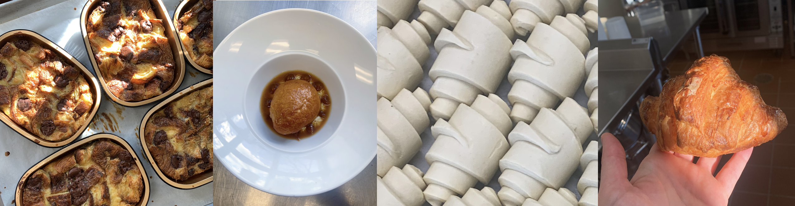

Restaurant Sales Predictive Modelling
Table of Contents
1. Overview

I worked part-time as a pastry cook in a bakery/restauarant. I noticed we were manually guessing how much
of each item to bake each day and subsequently how much of each ingredient to order. I saw several hundred
croissants thrown out over the course of my time and sought to combine my degree with my part-time job to minimize
food waste and increase margins.
Project Goals:
To create a predictive algorithm that could anticipate the daily sales of key menu items to:
- Minimize food waste
- Anticipate ingredient purchasing
- Better predict staffing needs
2. Data & Tools
Data
Restaurant Data
- 350+ individual CSV's of daily aggregated sales data
- each file included columns with each product, the number of sales, and total sale amount in $
Weather API
- Temperature (hour by hour high and low)
- Weather condition by hour (sunny, windy, cloudy, partially cloudy, rainy, hailing, etc.)
Tools
Jupyter Notebook
Python
Libraries
Sklearn, Pandas, Numpy, Datetime, Tqdm
Weather API
3. Data Preprocessing
Restaurant Data
- Reformat column headers
- Convert Dates to Datetime objects
- Remove placeholder columns
- Remove columns with no data
- Create Categorical Variables for Days of Week
Weather API
- Gather daily high and low (from high and low over 24 hours) - Gather % Sunny, Precipitation, Cloudy, or Other (ie. Extreme Wind, Tornado)
Gameday
- Identify if the day in question was a gameday or not (binary)
Evaluation Metric
We wanted to create our own evaluation metric. The given evaluation rms uses the distance the predicted estimate
is from the true value squared. This means that estimates that are above and below the true value are treated equally.
In a kitchen, it is more cost efficient to make more items than are sold but fulfill all customers' desires than it is
to not make enough items and lose out on sales. Therefore, we wanted to create an evaluation metric that
prioritized algorithms that over-estimated more than they under-estimated while still trying to preserve accuracy.
To do this, we created an evaluation metric that utilizes the function below:
This metric penalizes under-estimates more than over-estimates by the multiplier variable alpha. If alpha is 1.2,
then under estimates are penalized 20% more than over-estimates.
4. Final Model
Feature Selection
We tried 3 variations of features: - Sales of Previous Day - Weekday - Weekday, Gameaday, Weather & Temperature We found that the combination of Weekday, Gameday, Weather and Temperature was the most precise combination of features.
Model Selection
While performance among other model types was marginally better (EVIDENCE HERE), it was important that this prediction model could be used. The client didn't have access to someone who could regularly run and interpret a python file. For this reason, we needed to train our model with an algorithm that could be extrapolated to an excel file: a medium that the client was familiar with.
Models Tried
Given the small amount of data available, we used a 5 fold kfold approach to test each model. We used the average of each evaluation metric of each fold to find the best model. The models tried were: - SVR - MLP Regression - Linear Regression
Linear models produced results with extreme coefficients. To account for these coefficients, we used a ridge regression to penalize high-coefficient
models.
5. Demo
The interactive model allows a user to input 7 criteria that the model then uses to predict sales of high-grossing
menu items.
Day of week is the string input for the day of the week
% Weather requires weather forecasts prediction for precipitation, sun, or other (ie tornado) weather events for the day of question. Guesstimates can
be utilized when forecasting far into the future. The total of all of these values must equal 100%
Temperature High & Low is the temperature in farenheight that represents the highest temperature on the day in question and the lowest temperature
on the day in question respectively.
Game Day? asks, in binary, if the given day is a University of Michigan game day. If yes, the user inputs 1, if no, the user inputs 0.